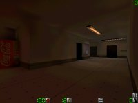

Map name:
Asylum
Map author:
Holy Goat
Map filename:
asylum.zip
Reviewed by:
Bowden;
Deathhead;
Jordan Thornes;
Dave Adam (Eraser
Review:
(Note to readers: since there are currently no servers that I know of that run this map, this review is based on my first impressions during my walkthrough. Accuracy is questionable.)
Design: This map is an asylum, obviously. It is an enclosed three level building with stairs and an elevator connecting the levels. The details are where this level really shines. The building contains dormatories, security stations, and even a rec-room with a working dartboard. There are lots of dark narrow hallways, so the emphasis is devinately on stealth. Also, there are a lot of small,dark rooms. The elevator and plenty of doorways sould add plenty of strategy. The touchs I found really impressive were the electric prsion-style doors and the rain sound near the windows. Spooky. Overall, this level has a very consistant theme. One note, however: the buttons that control the elevators can crush you if you are standing under one when going up.
Weapon/item/ammo placement: Strangely, I didn't see either of the automatic weapons on this level (mail me if I'm wrong.). I'm not sure how much they'll be missed in these tight corredors, but if you're a run-and-gunner, you might want to stay clear. I found it impressive that not only are the weapons and items well spread out, but they make sense where they are placed. The shotgun is in a "gun rack" cabinet, and kevlar vests are behind a security station. Ammo is fairly sparse, I'd say just about right, but I haven't tested it in combat. My only complaint is that there is only one grenade. I usually despise grenades, but there are a lot of small dark rooms in this map. Grenades would discourage camping.
Gameplay: This level would lend itself well to a deathmatch of between four and ten. Teamplay wouldn't be much fun in the tight corredors. As I said, there is a definate emphasis on stealth, which I think is cool, but others might be turned off by it. Lots of narrow hallways, and plenty of obstacles. I can imagine some great firefights here.
Pros: Good theme, atmosphere; emphasis on stealth over firepower.
Cons: Hazardous elevators; little potential for teamplay.
Overall: 8 1/2 of ten
-Deathhead
Review:
When I played this map for the very first time and on my very first respawn, I was stuck in a padded room with no way out, so I was thinking what a bad map when you respawn in rooms that have no exit, but I finally figured out that those rooms only open from the outside and you rarely get stuck in one of those rooms.
On the layout and theme of this map I would give it a 9/10 because it has paid attention to a lot of detail. From the working dart board to the padded cells this map nearly has it all. This map is a close in battle map, which is the type of map I like, don't try to hide on this map because you'll probably get shot in the back.
I really can't review the framerates becuase I'm on a slow connection so people jerk around anyways, and I have a slow computer only a P166 with no 3d accelerator, so it'll always run much better on anybody else's computer.
There really seem to be too many weapons on this level, I like it when there are only a few powerful weapons so there are more pistol battles.
The only other minus about this level is if you are one of those sneaky snipers, or defensive types there really are no good places to hide and snipe from. This level is just too small for that type of thing.
Overall I give this map a 9/10 it looks great and is a blast to play. I recommend people to download and play this map!
-Jordan Thornes
Review:
This level is very cool. I love the rain sounds and the rain hitting against the window. I haven't gotten a chance to play multiplayer with it yet (i like to run through levels offline before playing them) but it seems like it could be a lot of fun as a deathmatch map, but not as a teamplay map. It bogs down in a few places on my p166 but its not really that bad. I think we should have more reveiws for low end pentium/software users. Well at least until we get those 450mhz PIIs we want. The only thing i find annoying about this map is that damn radio in the room with all the beds. No wonder the people there are crazy! I did what anyone would do when youre in a room with suck music blasting from all 4 walls, i shot the stereo. And the music stopped! I think that was a really nice touch and anyone who plays this map should get extra points for filling that thing full of lead.(That reminded me of the speakers in the duke3d grocery store level)
Overall rating 9/10
-Dave Adam (Eraser
Review:
All i have to say is WOW, Holy Goat has really done a great job with this map, i feel right at home in this map (heh). This is a 3 floor map, although i find one team can sit and pick off anyone stupid enough to come onto their floor in through either entrance (elevator or stairs) this isnt always the case, someone always seems to slip by. The weapons placement was pretty nice, not too many powerful weapons to close to each other. Textures in this map were great, although i feel if the author had added actual windows to the map instead of using textures that it would greatly improve the look of the map, as for r_speeds and framerates, don't worry, they're fine. This map is great for usage of throwing knives in teamplay, since the halls aren't too wide, but aren't too thin, i really hated the music in the 3rd floor room with all the beds, i guess you'd HAVE to be crazy to be able to like it.
Uh..... anyway, any server admins interested in a new great map, get this map and put it into rotation now, o r i'll come beat you to death with your own shoes :)
- dev
Review:
This map seems very professionally made. However, although there is not visible fault, I found it a bit dull. Basically, it could've been any map with cells and things. Endless corridors and rooms, while giving a good atmosphere, gave us nothing new to play. Admittedly, there were some nice touches - spilt coffee on the floor, a dart board that works, but really, they're all very perdy but not really necessary. This map must have been made for Deathmatch - I tried it once in Teamplay, and I'm sorry but it didn't have much going for it. The weapons placement is fairly standard - no brain teasers. It runs very smoothly, looks very nice in places, but ultimately a dated stereotypical interior map. A very nice job - the map maker is clearly talented, but maybe he could try some more novel ideas. I#d give this map 5 or 6 out of 10. Download it when it comes as a standard AQ2 map, as it may do.
-BazooeyMap
Review:
The concept of this level is fairly realistic, seeing as how a lot of us playing this belong here in the first place :) But other then that, this map has a great feel to it, and good visual consistancy.
The effects incorporated in the Asylum level are pretty interesting and provoked curiosity, often getting me killed. The game of darts gets me throwing all my knives at it alot of the time, (I have also killed at least five people while playing darts unsuspecting my wrath. He he,
Something else I have to note on is the integration of the elevator and the stairway. This in itself can generate a great variety of strategic combinations during teamplay, when hitting a force of say 2 or 3 from both sides. Using the radio to communicate this can increase the chances you have of fully acting it out. That is if anybody actually communicates during team play.
But being a knive and a mp5 lover, the long hallways, and closed in passageways, easily satisfy a lust for close up combat, that I have deep down. One flaw i can really comment on is the starting location in the cell. It can be really frustrating and down right nerve racking. But that also draws on the need to communicate a way to get one player up there on the window, to blast in some fools face.
well I give this level a solid 8 and a half from 1 to 10. There isnt a great variety of textures but it is a really good level, that gets me pumping and raged to kill some more.. Its one you gotta have.
-ReD